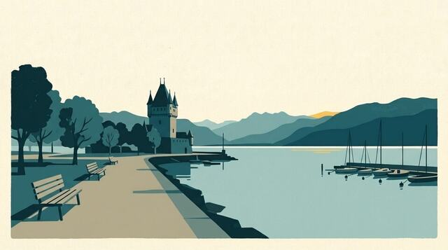

Sur l’eau aujourd’hui
- Baignade, paddle, voile et bain d’hiver : la note de chaque activité s’affiche ici.
Les plages voisines
Un verre ou un repas dans le coin
- Le PavoisMorges
Restaurant de l’hôtel Mont-Blanc au Lac, terrasse sur les quais de Morges.
- La Jetée de la CompagnieLausanne · ouvert en saison
Buvette d’été sur la jetée d’Ouchy : ponton, grillades et coucher de soleil.
- Hôtel-Restaurant de la PlagePréverenges
Au bout de l’avenue de la Plage, terrasse ensoleillée à deux pas de la grande plage de sable.
- La Guinguette de VidyLausanne · ouvert en saison
Devant le Bowl de Vidy, au bord de l’eau : le rendez-vous des promeneurs et des paddleurs.
- Le LacustreLausanne
Au-dessus du débarcadère d’Ouchy : pizzas au feu de bois et brunch le week-end.
- Bar du Beau-Rivage PalaceLausanne
Le verre chic, terrasse sous les arcades face au lac et aux Alpes.
- La GénéralePully · ouvert en saison
Buvette du port de Pully, marches en pierre jusqu’au lac, beach-volley à côté.
- Restaurant du Port de PullyPully
Sur le port, face au lac et aux Alpes.
- Le RivageLutry
Terrasse sur les quais de Lutry, poissons du lac, au pied de Lavaux.
D’où viennent ces chiffres
Le 25 novembre 2026, au matin : 9,1 °C à 70 cm sous la surface, d’après le modèle Alplakes.
La température de l’eau à Préverenges vient du modèle Alplakes de l’Eawag, qui calcule le Léman en trois dimensions : on lit la valeur à 70 cm sous la surface, devant la plage, toutes les trois heures. Le vent et l’air viennent d’Open-Meteo. La qualité de l’eau de baignade n’est affichée que si une analyse de moins de 30 jours existe (canton de Genève pour les plages genevoises) ; sinon, vérifie-la à la source auprès du canton ou de la CIPEL, liens en bas de page. Le verdict est calculé par l’app Mon Lac à partir de ces données. Indicatif : le lac a toujours le dernier mot.
Arrêt de transport public le plus proche : Préverenges, village, à 452 m à vol d’oiseau.
Sur ce lac
